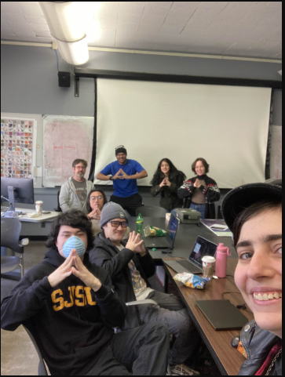

Art 101, Sec 02 - Fall 2024
Daria Orlova - Participation Log
“Idleness, the most wasteful activity.”
- Kir Bulychev
- Kir Bulychev
| 8/28 | Discussed answer to question 1 (definition of algorithm as a tool) in Reading 1.
Shared our workshop results and google slide deck with my group (workroom 1) to the class. |
|
| 9/4 | Talked about answers to Reading 1, Question 4: my interpretation and reaction to works by Jared S Tarbell and Microsoft Songsmith. | |
| 9/9 | Shared my Exercise 1 results with class and snippets of code. No lingering questions about the exercise or confusion with assignment. | |
| 9/11 | Shared Exercise 2 experimentation and the trouble I ran into. I wanted to toggle my images between different key presses, and the problem had been in my placeholder variable needing to have a default loaded image. Otherwise the program would throw a load error. | |
| 9/15 | Lyndon and I helped Ryan re-configure his project files for class on his new computer through the class discord in #general. | |
| 9/20 | Joined the study group made by Nabeeha from Art 101 Sec 01. Worked on our Project 1’s and helped each other when we ran into issues. | |
| 9/21 | Helped Kyra with understanding some js concepts and the requirements for Project 1.
Worked with her to fix some bugs in her custom functions. |
|
| 9/22 | Helped Kyra and Jared from Sec 01 work through some small bugs they had.
Met with Nabeeha to work on our Project 1’s again. |
|
| 9/23 | Helped explain how toggle logic works in the draw() loop to Kateline and troubleshoot how she wanted an image to function using that.
Explained the syntax for image and text hyperlinking in the website template to Kyra. Shared to both sections, a sketch.js code template that could generate a cleanly tiled jpg of their 12 project 1 images. |
|
| 9/30 | Shared my experimentation with transformations and custom functions to the class.
Shared my code in the class discord as well for people to look at the rotating eyes that move when the mouse moves. |
|
| 10/2 | Shared my progress on Exercise 3 in class with my moving and colliding roombas. | |
| 10/4 | Met with inter-sectional study group again! Nabeeha, Kyra, Rhyme, Jared, Jupiter and Alisha showed up for this week and we all worked on Exercise 3. Lots of discussion on how translate() changes transformations throughout parent and child functions and affects the position values passed into rect() and various shape functs. | |
| 10/9 | Shared Exercise 4 progress in class with the use of arrays to display a huge number of creatures on the canvas. Met up with the study group: Nabeeha, Kyra, Alisha, Lyndon attended. We helped and worked on finishing Exercise 3, and starting Exercise 4. |
|
| 10/11 | Met up with study group: Nabeeha, Kyra, Rhyme, Jared, Lyndon, and Khoa attended. Helped with some bug-fixing in people’s Exercises 3 and 4. |
|
| 10/16 | Organized a group with Nabeeha to attend the DMA BFA Workshop from CADRE SO. We prepared some questions ahead of time to ask, and discussed the information we got from the workshop with each other. | |
| 10/21 | Helped Lyndon with understanding Array objects and how to use a for loop to manipulate and call the items within them. He was then able to write shorter, and cleaner code for his Exercise 4. | |
| 10/23 | Shared my Exercise 4 with the class and my practice with formatting a video file for Project 2. | |
| 10/25 | Met with study group: Nabeeha, Rhyme, Jared, Jupiter, and Lyndon. Everyone worked on either their BFA Portfolios or Project 2. | |
| 11/1 | Met with study group: Nabeeha, Rhyme, Jared, Lyndon and David. We worked through Reading 2 a little and started some ideas for Exercise 5. | |
| 11/8 | Met with study group: Alisha, Jared, Jupiter, Lyndon, Nabeeha, and Rhyme. We worked on our Exercise 5. | |
| 11/15 | Met with study group: Nabeeha, Khoa, Kyra, Lyndon, Jared and Ryan. We worked on either Exercise 5 or Project 3. | |
| 11/19 | Met with study group: Nabeeha, Lyndon, Jupiter, Khoa, Rhyme, Jared and Alisha. We worked on either Exercise 5 or Project 3. |  |
| 11/22 | Met with study group: Alisha, Jared, Jupiter, Khoa, Lyndon, Nabeeha, and Rhyme. We worked on Project 3. Lyndon and I expanded more on our triangle library. | 
|
| 11/25 | Met with study group: Jared, Khoa, Lyndon, Nabeeha, and Rhyme. We worked on Project 3. | |
| 12/6 | Met with study group: Jared, Jupiter, Khoa, Kyra, Lyndon, Nabeeha, and Rhyme. We worked on Exercise 6 and Project 4. | |
| 12/10 | Met with study group: Jared, Jupiter, Khoa, Lyndon, Nabeeha, Rhyme, Ryan and Steve. We worked on Exercise 6 and Project 4. |  |
| 12/11 | Met with study group: Alisha, Jared, Jupiter, Khoa, Lyndon, Moosa, Nabeeha, Rhyme, and Ryan. We worked on Exercise 6 and Project 4. |  |